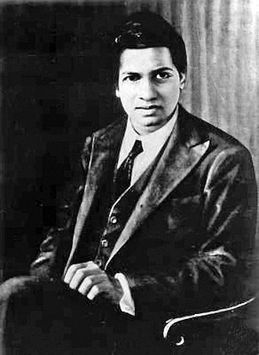

A Tribute to
"Srinivasa Ramanujan""An equation for me has no meaning unless it expresses a thought of God."

Srinivasa Ramanujan
"An equation for me has no meaning unless it expresses a thought of God."
Srinivasa Ramanujan
Srinivasa Ramanujan, the legendary mathematician of India, was a man whose brilliance transcended time and space. Born on December 22, 1887, in Erode, Tamil Nadu, he possessed an extraordinary intuition for numbers and mathematical patterns, which left an indelible mark on the world of mathematics
Srinivasa Ramanujan, the legendary mathematician of India, was a man whose brilliance transcended time and space. Born on December 22, 1887, in Erode, Tamil Nadu, he exhibited an extraordinary affinity for numbers from a very young age. His fascination with mathematics was evident as he independently discovered complex theorems and formulas without formal education or access to advanced mathematical resources.
Despite facing numerous hardships, including financial struggles and a lack of academic support, Ramanujan’s love for numbers never waned. His perseverance and relentless pursuit of mathematical truth led him to create groundbreaking contributions in mathematical analysis, number theory, infinite series, and continued fractions. His famous notebooks, filled with thousands of intricate formulas, contained results so advanced that they continue to inspire and challenge mathematicians even today. His ability to intuitively derive mathematical truths without rigorous proofs left many astonished, making him one of the most enigmatic figures in mathematical history.
His collaboration with the eminent British mathematician G.H. Hardy at the University of Cambridge was a turning point in his career. Hardy, initially skeptical, was astounded by Ramanujan’s unparalleled mathematical intuition and depth. Recognizing his extraordinary potential, Hardy arranged for Ramanujan to travel to England, where he could further his research in a structured academic setting.
Together, they worked on several fundamental problems in mathematics, and their partnership led to some of the most important contributions in partition functions, modular forms, and infinite series. Hardy often described Ramanujan’s genius as something akin to that of Euler and Jacobi, two of history’s greatest mathematicians. Despite their cultural differences, Hardy and Ramanujan formed a deep intellectual bond, leading to remarkable discoveries that shaped modern mathematical thought. Hardy’s mentorship helped bring Ramanujan’s work into the global mathematical community, earning him a place among the greatest minds of his time.
Ramanujan’s discoveries were deeply intuitive, often arriving in dreams and visions, which he attributed to divine inspiration from the Hindu goddess Namagiri. His work contained some of the most fascinating mathematical formulas, many of which were ahead of his time. His most famous contributions include:
Despite his untimely death at the age of 32 in 1920 due to illness, Ramanujan’s legacy continues to shine brightly. The mathematical world still explores the depths of his work, uncovering new insights that reaffirm his unparalleled genius. The establishment of the Ramanujan Institute for Advanced Study in Mathematics and the declaration of December 22 as National Mathematics Day in India are testaments to his enduring influence.
Srinivasa Ramanujan was not just a mathematician; he was a beacon of inspiration, proving that passion, perseverance, and raw genius can overcome any obstacle. His life serves as a testament to the power of intellectual curiosity and the boundless potential of the human mind.
Even today, his contributions continue to influence modern mathematics, theoretical physics, and computer science. The Ramanujan conjectures remain a cornerstone in number theory, and his formulas are used in cutting-edge research fields, including cryptography, quantum physics, and string theory.
Today, as we honour Ramanujan’s contributions, we celebrate the infinite possibilities that mathematics holds—a vision he so beautifully embodied. His spirit lives on in every equation, every theorem, and every young mind inspired by the beauty of numbers. His journey from an unknown clerk in Madras to one of the most celebrated mathematical minds in history is a story of determination, brilliance, and the unyielding pursuit of knowledge.